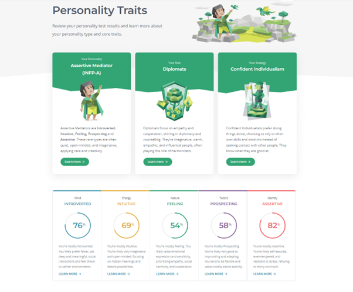

Personal Information
Marek Ivanov

Student number: s3925058
email: s3925058@student.rmit.edu.com.au
website www.github.com/
Student number: s3925058
email: s3925058@student.rmit.edu.com.au
website www.github.com/
Almost ten years ago my journey here in Australia started. Having done loads of different jobs I am now looking for a career change as it is time to settle down I was born in Estonia where after Year 12 in school I decided to study Electrotechnology, it was then when my interest in all things electrical sparked. Being a more of a hands on learner I liked working with electrical instruments, laying cables and tinkering with electronics. I am now 34 years old and have got quite a bit of real-life experience in different fields of life, from concreting to spray painting. I am currently working with a model making studio in Perth that produces realistic models utilising all sorts of technologies, from 3d sculpting in Zbrush to 3d printing real life size sharks. I am not quite sure where my path takes me but studying through RMIT online really has widened my perspective in the field. Recent developments in AI learning have really sparked my interest in 3d model making through deep learning and that is something that is very intriguing.
I remember seeing a first home desktop computer, it was an IBM PC and it had a “turbo” button. And the games we could play on it, like Doom3D, really were captivating. Thinking back from dial up modems to where we are now, with 5G internet speeds the development growth has been so rapid. That is probably one of the main reasons why everything regarding Information Technology always seems interesting, it is always advancing. Few years ago I was working with a shopfitting company to make some Christmas display windows in a high traffic shopping centre in Perth CBD. As all the other guys working in the company had not really any experience with electronics I took the lead in making our props move. Having built CNC machine and a 3d printer before I was pretty confident that could make it work with some Google-ing. Very quickly I came to realisation that running stepper motors with Arduino boards with no limit switches can get complicated quickly. Luckily for us a friend of a friend had more experience in it and saved us from failure. Having only a day to do it we stayed till early morning hours. All good got them working in the end. The main reason I have chose RMIT University is that the learning process is structured and the courses have deadlines. As I am working full time studying on campus would just take too much time unfortunately. I expect to learn a lot a there is so much in the field of IT to learn. Special interest is in learning languages like Python and Java. Hopefully will be able to write useful programs that make life easier at home and work.
There is an advertisement for Electronic Engineer for Machine Vision and Imaging position in a growing company that works with products in this field. It works with customers from ranging fields of applications, from manufacturing to defence. That means that it requires constantly learning about things and being curious how thing are made.
Technical skills and deep understanding of about how electrics/electronics are required as there are certain factors that can be harmful to health. Good computer skills, like knowing Windows OS/Linux and programs like Mathlab are necessary when dealing with embedded software development.
A degree in Information Technology would be a good start. That way could get a good understanding of programming languages and software development. As I have already some background with electronics that isn`t too frightening, I believe going through some courses would definitely refresh memory. That would mean that in 4-5 years could already start thinking of applying for the position. Good thing with this company is that they are looking for a long term position with this application and are willing to teach as well. There is a strong possibility that they might consider graduate applications. Having personal portfolio of project would be beneficial as well.

I have already learned little bit about electronics in the past, but those probably need a refresher. Having a good goal post towards to aim with this position means that I would have to carry on with Bachelor in Information Technology and learn the required key skills for the qualification. I have got a 5 year leading hand position experience in a fast paced concrete furniture manufacturing company. Team work and delegation are always desirable skills for employers. With Bachelor degree a chance to get hired as an junior developer in a company is good possibility.
Firstly, I need to get a solid foundation in Information Technologies. For that a bachelor’s in information technologies is a good start.
Some time at that position and further training should make me employable in the field
So to conclude:
Electronic engineers build and design consumer products to make life better for everyone
My Myers and Briggs test results:


Also learnig style test result:

And Big 5 factors test results:

Having done the same test year ago I can see that they do indicate the type of personality quite well. Year 2021 I was Assertive Logician, prospected introverted thinker (INTP-A) which is in very similar range with 2022 results (INFP-A), but this year I have grown on the “Feelings” scale. I like to learn things by doing them - that agrees with being a tactile learner definition. What is surprising is that I am not so good in Auditory learning, more of a visual type. That might explain why listening hours of audiobooks is not really the same with reading a paper back copy. IPIP Big Five Factor Markers indicate being more drawn to the introversion (29%) with high (84%) of emotional stability. Score on agreeableness conscientiousness indicates being more impulsive and disorganised that I can agree as well. While forming a team a personality types should be taken account. Certain types work better together, and some might be prone to conflicts. Those test results should be taken with a grain of salt, but they do indicate which way does the personality lean to. Me being more of a disorganised introvert means that a team work should have a solid structure with all the roles made clear.
With the developments in deep learning and AI building such smart robots becomes more and more feasible. Previously with robots there was a problem, every move needed to be programmed. Now it is possible to let robots “learn” and make their own decisions through set parameters. In this day and age automating harvesting is the next logical step
The harvest robot needs to be agile and cause minimum harm to the ground surface. Problem with modern tractors is that heavy machines compact the soil too much between plants and that way causing loss of usable land on farms. This project idea is about a robot that looks like a scorpion, six legs and one picking arm at the back. Using python and image recognition technologies it is possible to detect produce, measure the ripeness and harvest, using only one robot.
Harvester bot is fully charged in the station. Farmer inspects fruits and tells when to activate harvest robots. Once activated robots will start roaming on the set field, scanning trees for fruits. Once fruit that has ripened to acceptable values robot harvests the fruit and places in the basket. Once basket is full, the robots will transport produce to central transport robot that weighs and delivers produce to processing shed.

Go back Up